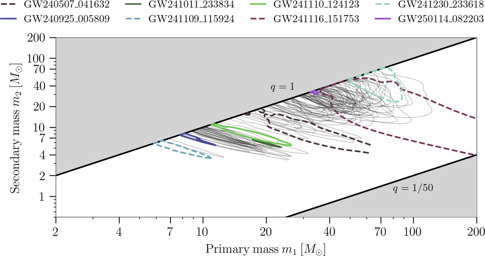
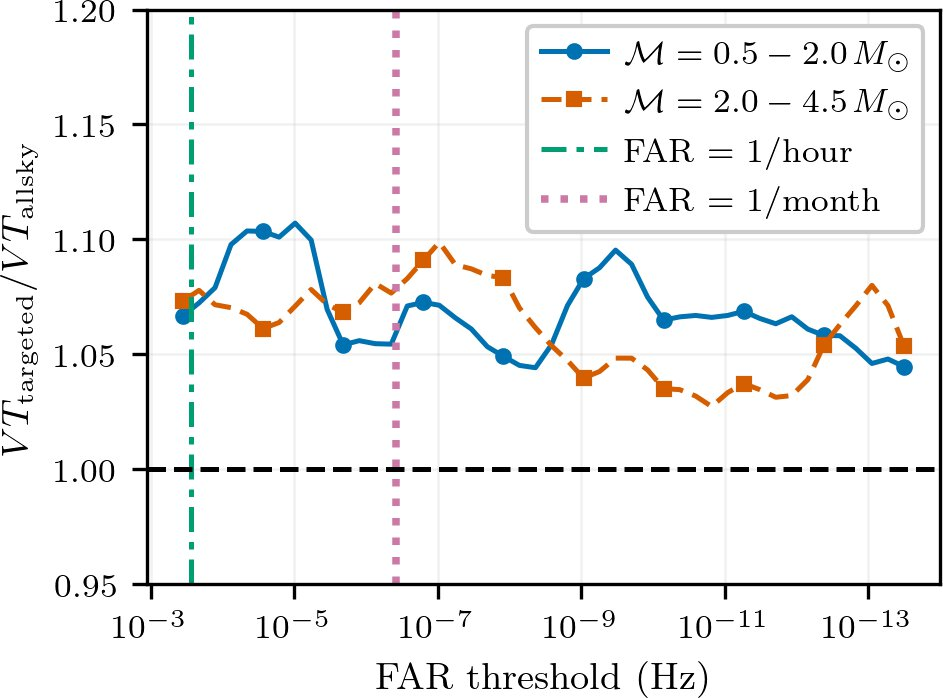
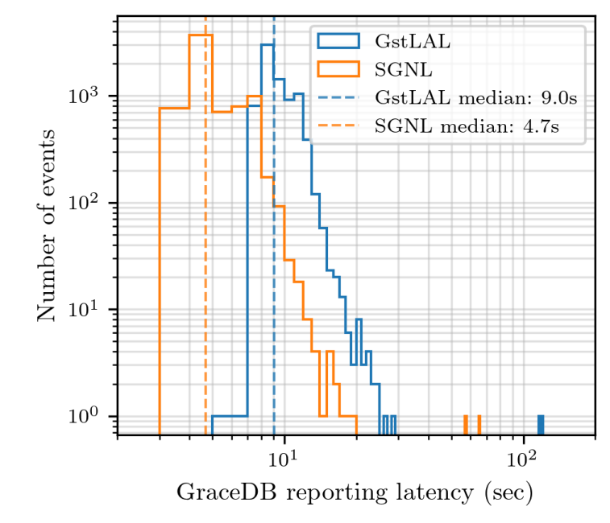
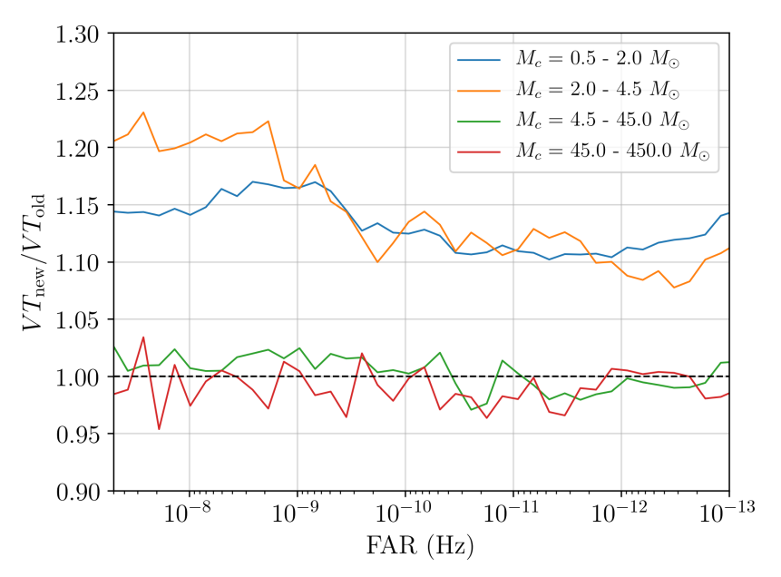
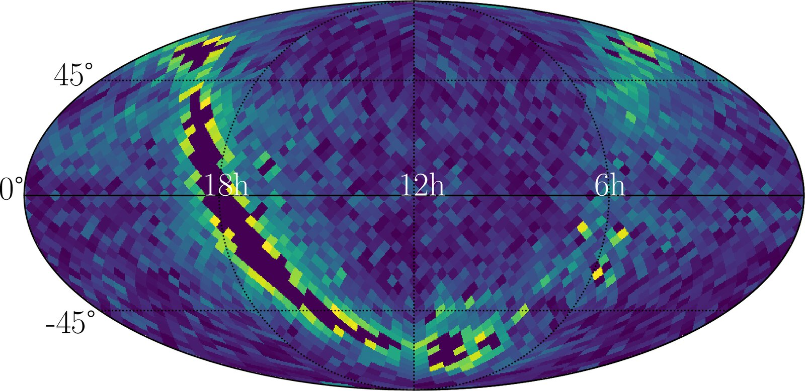
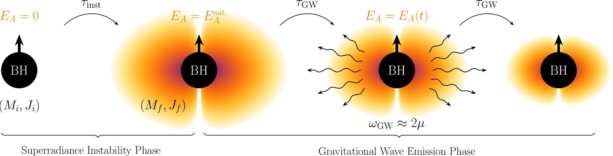

Research
I study gravitational waves, the ripples in spacetime produced by merging black holes and neutron stars, as a member of the LIGO Scientific Collaboration. My work spans finding these signals within seconds of arrival, cataloging them, and searching for faint signals hidden below the usual detection threshold, where new astrophysics and new physics may be waiting.
Gravitational-wave transient catalogs
The Gravitational-Wave Transient Catalogs (GWTC) are the LIGO–Virgo–KAGRA Collaboration's official record of every confident compact-binary merger. I help manage the catalogs for the fourth observing run (O4): I co-chair the GWTC working group in the collaboration and am the editorial chair of the GWTC-5.0 results paper, which reports the candidates up to the second part of O4 (O4b).

Targeted searches for multi-messenger follow-up
As the GW170817 discovery demonstrated, the primary route to multi-messenger observation is to issue a public alert and point electromagnetic telescopes at the inferred sky location. However, the inverse approach is equally possible: short gamma-ray bursts and other electromagnetic transients tell us where and when to look for preceding GW signals. I am developing a targeted mode of the GW search pipeline that folds the sky position and time of an external trigger into its likelihood-ratio ranking statistic. This recovers weaker GW signals that an all-sky search would miss, while keeping false alarms under control, and enables rapid follow-up of electromagnetic transients.

Low-latency detection pipeline
GstLAL is one of the LVK’s real-time matched-filtering pipelines that issue public alerts within seconds of a merger, and it made the first low-latency detection of GW170817. I worked on its readiness for O4, including the template bank used throughout the run, and on event follow-up during observing runs. I am now part of the team building its successor, SGNL, which reimplements GstLAL’s matched filtering in a lightweight Python streaming framework with GPU acceleration and cuts the median alert latency roughly in half.
Key papers
- Huang et al., SGNL: Scalable Low-Latency Gravitational Wave Detection Pipeline, arXiv:2511.04730 (2025)
- Ewing et al., Performance of the low-latency GstLAL search towards O4, PRD 109, 042008 (2024)
- Sakon at al., Template bank for compact binary mergers in the LVK fourth observing run, PRD 109, 044066 (2024)

Statistical processing of gravitational-wave detections
I am one of the core developers of the GstLAL and SGNL pipelines, specializing in their statistical post-processing. Ahead of O4, I led upgrades to GstLAL’s ranking statistic: removing signal contamination from the background, adding the bank-ξ² statistic, upgrading the ρ–ξ² signal model and integrating KAGRA. Together these improved the pipeline’s sensitivity by roughly 15–20%.

Anisotropic stochastic backgrounds
The combined hum of countless unresolved sources forms a stochastic gravitational-wave background, whose brightness may vary across the sky and trace structures such as the Galactic plane. I developed a Bayesian framework that infers the physical parameters of a targeted anisotropic background and chooses the angular resolution from the data itself. I applied it to O3 data to search for millisecond pulsars and extended it to test non-tensorial polarizations beyond general relativity. I co-chair the LVK's anisotropic stochastic-background working group.

Ultralight bosons
Ultralight bosons, dark-matter candidates beyond the Standard Model, can extract spin from black holes through superradiance. The resulting clouds emit nearly monochromatic gravitational waves, and the signals from the whole black-hole population adds up to a stochastic background. My Ph.D. work modeled this background for scalar and vector bosons and searched Advanced LIGO data for it. Under optimistic black-hole spin assumptions, vector bosons with masses of 0.8–6.0 × 10⁻¹³ eV are excluded.
